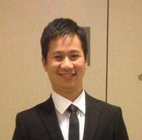

Arnold Yap | WDD 130

Hi! My name is Arnold Yap from Davao city, Philippines. I love to draw and watching movies. I am married and father of 2 wonderful kids.
Hi! My name is Arnold Yap from Davao city, Philippines. I love to draw and watching movies. I am married and father of 2 wonderful kids.